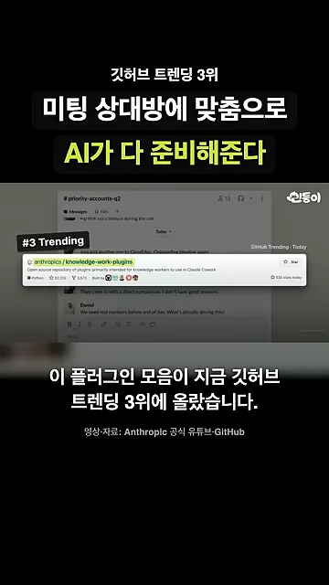
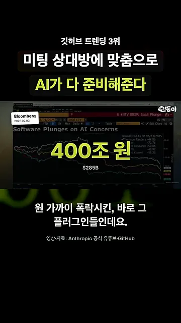
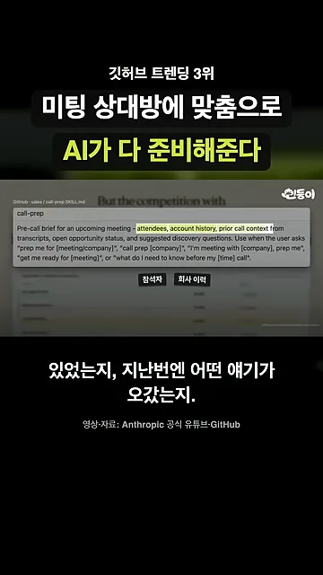
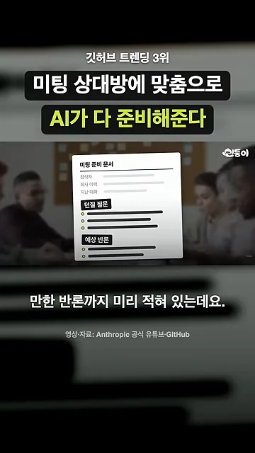
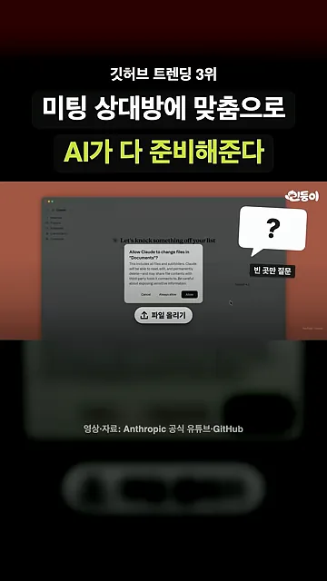
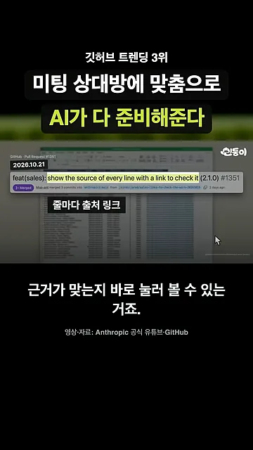
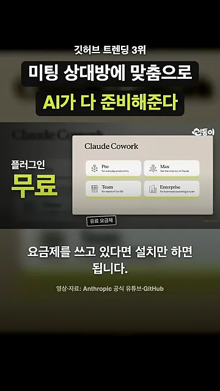

앤트로픽이 만든 직무별 플러그인
영상이 소개하는 건 앤트로픽 공식 깃허브 저장소 anthropics/knowledge-work-plugins예요. 영업, 마케팅, 법무, 재무처럼 직무마다 하나씩 플러그인을 만들어 두었고, 영상은 이걸 '직무별 전문가 11명'이라고 불러요.
아래 화면에서 왼쪽 위 #3 Trending 꼬리표와 그 옆 저장소 카드를 보면 돼요. 카드 설명에는 'Claude Cowork에서 쓰도록 만든 지식 노동자용 플러그인 저장소'라고 적혀 있어요.

영상은 이 플러그인들이 올해 초 소프트웨어 회사 주가를 하루 만에 400조 원 가까이 끌어내린 바로 그 플러그인이라고 말해요. 화면에는 2026년 2월 3일자 블룸버그 차트가 나오고, 제목은 'AI 우려로 소프트웨어 주가 급락'이에요. 차트 위 큰 글씨 400조 원 밑에 원래 금액 2,850억 달러가 작게 적혀 있어요.

미팅 준비 문서가 나오기까지
예로 드는 건 영업 플러그인의 call-prep 스킬이에요. 고객 미팅이 잡혔다고 말하면 준비 문서 한 장이 나와요. 아래 화면은 이 스킬의 설명 파일이에요. 노란색으로 칠한 attendees, account history, prior call context가 문서에 들어갈 재료이고, 영상은 그중 두 개를 '참석자', '회사 이력'으로 짚어 줘요.

영상은 완성된 문서를 그림으로 보여 줘요. 위쪽에 참석자, 회사 이력, 지난 대화가 있고, 아래로 던질 질문과 예상 반론 칸이 따로 붙어 있어요. 상대를 아는 데서 끝나지 않고, 미팅에서 무엇을 물을지와 무엇을 받아칠지까지 적어 둔다는 점이 핵심이에요.

영상이 말한 다섯 칸을 정리하면 이래요.
| 칸 | 담기는 것 |
|---|---|
| 참석자 | 상대가 누구인지 |
| 회사 이력 | 이 회사와 그동안 무슨 일이 있었는지 |
| 지난 대화 | 지난번에 어떤 이야기가 오갔는지 |
| 던질 질문 | 이번 미팅에서 내가 물어볼 것 |
| 예상 반론 | 상대가 꺼낼 만한 반론 |
정보는 어디서 가져오나요
영상은 재료를 채우는 순서도 짧게 말해요. 연결된 도구가 있으면 거기서 찾아요. 연결한 게 없으면 파일을 올리면 되고, 그래도 비는 칸은 한 번만 물어봐요.
아래 화면이 ②와 ③ 단계예요. 가운데 파일 올리기 버튼 위로 Claude가 문서 폴더 접근을 허락해 달라는 창이 떠 있고, 오른쪽 물음표 말풍선에는 '빈 곳만 질문'이라고 적혀 있어요.

줄마다 붙은 출처 링크
며칠 전 업데이트로 문서 한 줄 한 줄에 출처 링크가 붙었어요. 화면의 깃허브 PR(Pull Request)은 2026년 10월 21일자 #1351이고, 제목은 feat(sales): show the source of every line with a link to check it (2.1.0)예요. 모든 줄에 출처와 확인 링크를 단다는 뜻이에요.

얼마나 드나요
플러그인 자체는 무료예요. 마지막 화면에는 Claude Cowork 요금제 선택 창에 Pro, Max, Team, Enterprise 네 개가 보이고, 그 아래 '유료 요금제'라는 꼬리표가 달려 있어요. 이 중 하나를 쓰고 있다면 설치만 하면 돼요.
